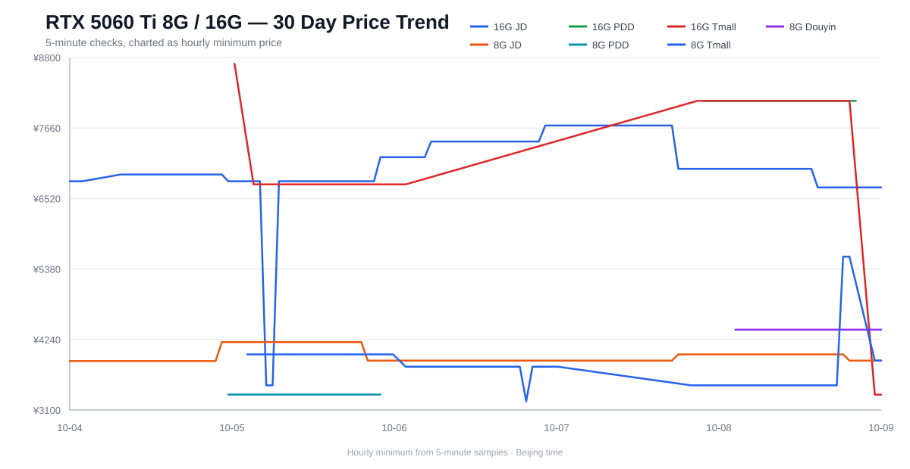

RTX 5060 Ti 8G / 16G 价格走势
每 5 分钟采集一次；走势图使用每个平台每小时最低价。原始 5 分钟数据保存在 GitHub Actions artifact 中。

近30天最低（8G / 16G 合并）
暂无
新增消息源状态
帖子价格仅作线索；通过规格、SKU和时效核验后才提醒。
| 来源 | 状态 | 相关条目 | 说明 |
|---|---|---|---|
| 慢慢买 | 暂不可读取 | 0 | ConnectTimeout |
| 慢慢买 | 暂不可读取 | 0 | ConnectTimeout |
| B站 | 暂不可读取 | 0 | HTTPError |
| B站 | 已读取 | 19 | 可读取公开内容 |
| 小红书 | 待添加链接 | 0 | 需添加公开笔记链接；未登录搜索页不提供帖子数据 |
| 微博 | 待添加链接 | 0 | 需添加可公开读取的帖子链接；搜索入口目前要求访客登录 |
| 购物党 | 待添加链接 | 0 | 需添加可公开读取的比价链接；搜索入口目前要求验证码 |
| RSS·IT之家 | 已读取 | 0 | 已读取，暂无相关5060 Ti条目 |
| 商品SKU | 待添加链接 | 0 | 等待指定商品链接或搜索中发现具体SKU |